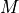
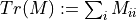

quanguru
quanguru.QuantumToolbox.linearAlgebra
Contains some basic linear algebra methods for scipy.sparse and np.ndarray types.
hc(matrix)
hc
Hermitian conjugate of a matrix , where * is complex conjugation, and T is transposition.
innerProd(ket1[, ket2])
innerProd
Computes the inner product of a ket vector with itself or with another, where .
norm(ket)
norm
Norm of a ket state , where .
outerProd(ket1[, ket2])
outerProd
Computes the outer product of a ket vector with itself or with another, where .
tensorProd(*args)
tensorProd
Function to calculate tensor product of given (any number i of) states ( in the given order).
trace(matrix)
trace
Trace  of a matrix M.
partialTrace(keep, dims, state)
partialTrace
Calculates the partial trace of a density matrix of composite state.
Hermitian conjugate of a matrix , where * is complex conjugation, and T is transposition.
matrix (Matrix) – a matrix
Hermitian conjugate of the given matrix
Matrix
Examples
>>> operEx1 = np.array([[1+1j, 2+2j], >>> [3+3j, 4+4j]]) >>> hc(operEx1) array([[1.-1.j, 3.-3.j], [2.-2.j, 4.-4.j]])
>>> operEx2 = np.array([[0, 1], >>> [1, 0]]) >>> hc(operEx2) array([[0, 1], [1, 0]])
>>> operEx3 = np.array([[1, 0, 0], >>> [0, 1, 0], >>> [1j, 0, 1]]) >>> hc(operEx3) array([[1, 0, -1j], [0, 1, 0], [0, 0, 1]])
ket1 (Matrix) – 1st ket state
ket2 (Matrix) – 2nd ket state
inner product
float
>>> cMatEx1 = np.array([[1], >>> [0]]) >>> innerProd(cMatEx1) 1
>>> cMatEx2 = np.array([[0], >>> [1]]) >>> innerProd(cMatEx2) 1
>>> cMatEx3 = (1/5)*np.array([[3], >>> [4j]]) >>> innerProd(cMatEx3) 1
>>> cMatEx4 = np.array([[1], >>> [1j]]) >>> innerProd(cMatEx4) 2
Norm of a ket state , where . This function simply returns the square root of innerProd
ket (Matrix) – a ket state
norm of the state
operator in square matrix form resulting from the computed outer product
>>> cMatEx1 = np.array([[1], >>> [0]]) >>> outerProd(cMatEx1) array([[1, 0], [0, 0]])
>>> cMatEx2 = np.array([[0], >>> [1]]) >>> outerProd(cMatEx2) array([[0, 0], [0, 1]])
>>> cMatEx3 = (1/5)*np.array([[3], >>> [4j]]) >>> outerProd(cMatEx3) array([[0.36+0.j , 0. -0.48j], [0. +0.48j, 0.64+0.j ]])
>>> cMatEx4 = np.array([[1], >>> [1j]]) >>> outerProd(cMatEx4) array([[1+0.j , 0. -1j], [0. +1j, 1+0.j ]])
*args (Matrix) – state matrices (arbitrary number of them)
tensor product of given states (in the given order)
>>> cMatEx1 = np.array([[1], >>> [0]]) >>> cMatEx2 = np.array([[0], >>> [1]]) >>> tensorProd(cMatEx1, cMatEx2) array([[0], [1], [0], [0]], dtype=int64) >>> tensorProd(cMatEx2, cMatEx1) array([[0], [0], [1], [0]], dtype=int64)
>>> operEx1 = np.array([[0, 1], >>> [1, 0]]) >>> operEx2 = np.array([[1, 0, 0], >>> [0, 1, 0], >>> [1j, 0, 1]]) >>> tensorProd(operEx1, operEx2) array([[0, 0, 0, 1, 0, 0], [0, 0, 0, 0, 1, 0], [0, 0, 0, 0, 0, 1], [1, 0, 0, 0, 0, 0], [0, 1, 0, 0, 0, 0], [0, 0, 1, 0, 0, 0]], dtype=int64) >>> tensorProd(operEx2, operEx1) array([[0, 1, 0, 0, 0, 0], [1, 0, 0, 0, 0, 0], [0, 0, 0, 1, 0, 0], [0, 0, 1, 0, 0, 0], [0, 0, 0, 0, 0, 1], [0, 0, 0, 0, 1, 0]], dtype=int64)
Trace of a matrix M.
trace of the given matrix
>>> cMatEx1 = np.array([[1], >>> [0]]) >>> trace(outerProd(cMatEx1)) 1
>>> cMatEx2 = np.array([[0], >>> [1]]) >>> trace(outerProd(cMatEx2)) 1
keep (ndOrListInt) – An array of indices of the spaces to keep after being traced. For instance, if the space is A x B x C x D and we want to trace out B and D, keep = [0,2]
dims (ndOrListInt) – An array of the dimensions of each space. For instance, if the space is A x B x C x D, dims = [dim_A, dim_B, dim_C, dim_D]
state (Matrix) – Matrix to trace
Traced matrix
>>> cMatEx1 = np.array([[1], >>> [0]]) >>> cMatEx2 = np.array([[0], >>> [1]]) >>> partialTrace([0], [2, 2], outerProd(tensorProd(cMatEx1, cMatEx2))) array([[1, 0], [0, 0]], dtype=int64) >>> partialTrace([1], [2, 2], outerProd(tensorProd(cMatEx1, cMatEx2))) array([[0, 0], [0, 1]], dtype=int64) >>> partialTrace([0], [2, 2], outerProd(tensorProd(cMatEx2, cMatEx1))) array([[0, 0], [0, 1]], dtype=int64) >>> partialTrace([1], [2, 2], outerProd(tensorProd(cMatEx2, cMatEx1))) array([[1, 0], [0, 0]], dtype=int64)
quanguru.QuantumToolbox
quanguru.QuantumToolbox.states